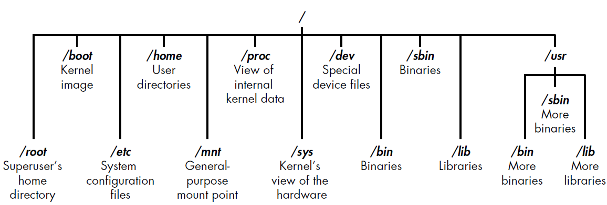

Linea de comandos Linux
- File system

- /root: directorio con todos los privilegios del usuario root.
- /etc: contiene generalmente los archivos de configuracion, cuando
y como inician los programas
- /home: directorio principal del usuario.
- /mnt: directorio donde se montan archivos manualmente.
- /media: se suelen montar CD y dispositivos extraibles como USB.
- /bin: directorio de aplicaciones binarias importantes(el
equivalente a ejecutables en Microsoft).
- /lib: directorio donde se encuentran todas las librerias del
sistema(programas que son similares a los DLL de Microsoft).
- /proc: directorio que ofrecer informacion sobre el sistema cerca
de los preocesos
- /sys: contiene archivos del sistema .
- pwd: directorio de trabajo actual.
-
man <app/command>: comando incorporado, da acceso a las páginas del
manual para la mayoría de las herramientas.
- su : permite cambiar de usuario sin cerrar sesión y volver a iniciarla de la sesión primaria.
- whoami: visualiza que el nombre de usuario actual.
-
ls: listar todos los archivos de directorio actual
- -a: muestra todos los archivos/directorios incluidos los “.”
- -l: muestra los archivos en formato de lista
- cd: cambio de directorio.
- cat <name file>: concatenar archivos lo que proporciona una salida del contenido de cada archivo .
- find: permite buscar cualquier archivo en el sistema.
- /<directorie>: enumerar todos los archivos en el directorio actual.
- /: enumera todos los archivos del sistema operativo.
- dir -user <-user>: enumera todos los archivos de un usuario especifico.
- dir -group <-group user >: enumera todos los archivos de un grupo de usuario especifico.
- -perm: encuentra todos los archivos con permisos especificos.
-
apt-get <command>: comando en sistemas derivados de debian para
instalar programas en Linux.
- list : lista los paquetes según los nombres
- search: busca en las descripciones de los paquetes
- show: muestra detalles del paquete
- install: instala paquetes
- remove: elimina paquetes
- autoremove: Elimina automáticamente todos los paquetes sin
utilizar
- update: actualiza la lista de paquetes disponibles
- upgrade: actualiza el sistema instalando/actualizando paquetes
- full-upgrade: actualiza el sistema
eliminando/instalando/actualizando paquetes
- edit-sources: edita el fichero de información de fuentes
- purge <app > : eliminar aplicación
- update –fix-missing: error al actualizar los paquetes
- wget: descargardor de archivos no interactivo
-
Man <command>: comando incorporado, da acceso a las páginas del
manual para la mayoría de las herramientas.
-
Man <command>: comando incorporado, da acceso a las páginas del
manual para la mayoría de las herramientas.
-
Man <command>: comando incorporado, da acceso a las páginas del
manual para la mayoría de las herramientas.
-
Man <command>: comando incorporado, da acceso a las páginas del
manual para la mayoría de las herramientas.
-
Man <command>: comando incorporado, da acceso a las páginas del
manual para la mayoría de las herramientas.
-
Man <command>: comando incorporado, da acceso a las páginas del
manual para la mayoría de las herramientas.
-
Man <command>: comando incorporado, da acceso a las páginas del
manual para la mayoría de las herramientas.
-
Man <command>: comando incorporado, da acceso a las páginas del
manual para la mayoría de las herramientas.
-
Man <command>: comando incorporado, da acceso a las páginas del
manual para la mayoría de las herramientas.